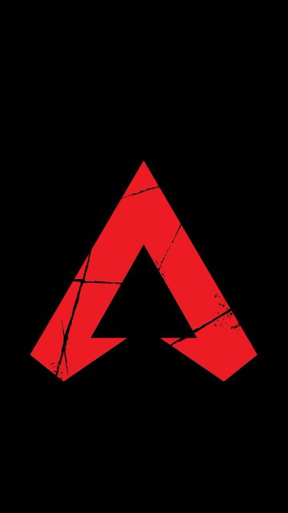
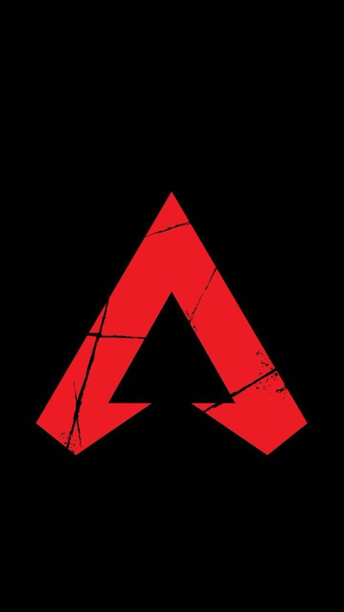
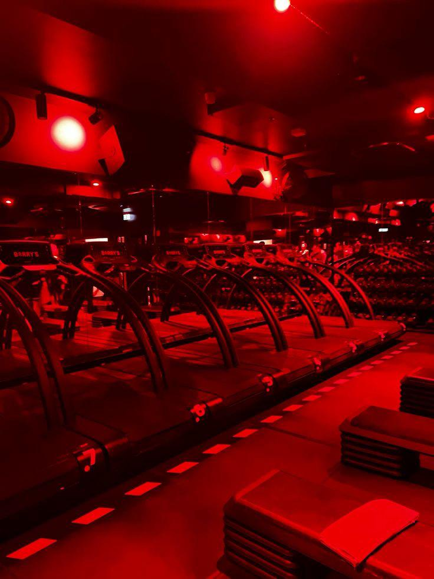

Jason Cardenas
 



A little bit about me - a passionate journey in Cybersecurity and tech creativity!
Hey, my name is Jason, and I’m born and raised in California. I have a
huge passion for Cybersecurity and appreciate the creativity
behind html and css has to offer when showcasing my work. When
I’m away from work I enjoy having a balance life with exploring all
aspects of tech, heading to the gym, and being immersed in horror
films and gaming.
“WHAT IF” THOUGHTS TO PONDER ON
FAVORITE MOVIE QUOTES
 THE MOVIE SAW REFERENCE: “Live or die, make your choice.”
It’s pretty blunt, but captures the idea of how people truly live in the real world. We may be here, but not truly living. The movie Saw is an acquired taste, but if you can look passed the gore and focus on the story and the whole adaptation/concept at hand, I truly believe you can appreciate what it delivers.
THE MOVIE SAW REFERENCE: “Live or die, make your choice.”
It’s pretty blunt, but captures the idea of how people truly live in the real world. We may be here, but not truly living. The movie Saw is an acquired taste, but if you can look passed the gore and focus on the story and the whole adaptation/concept at hand, I truly believe you can appreciate what it delivers.If I could have any superpower, it would be Reality Warping.
Why: Having this ability means being able to control, manipulate, or change reality at will of your choosing.



I’m super proud of the accomplishes I’ve made regarding my certifications and personal websites.

I received 2 certifications:
Comptia CYSA and Splunk
- I received 2 certifications: Comptia CYSA and Splunk
- Developed and maintained JasonCardenas.tech
- Developed Cybersecurity Labs
- Provided hands-on security analysis using Nmap, Wireshark, and penetration testing tools
- Developed various applications using C++ for problem-solving and automation